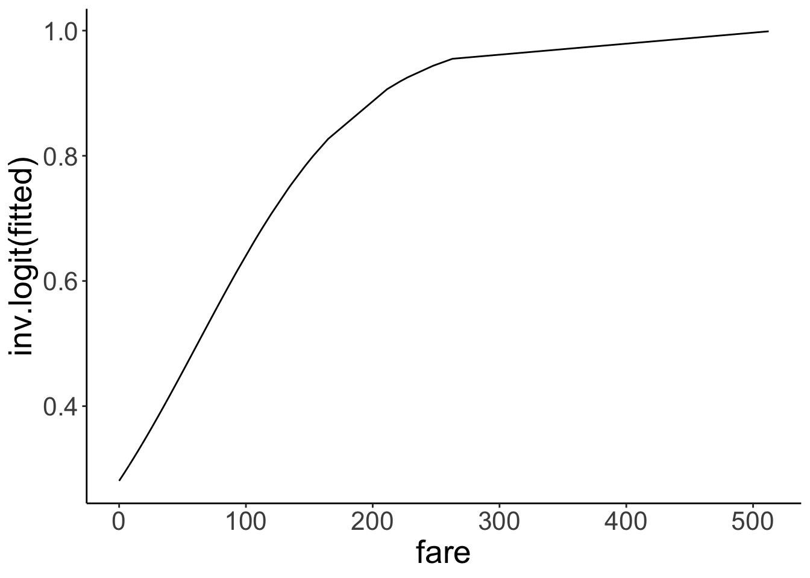
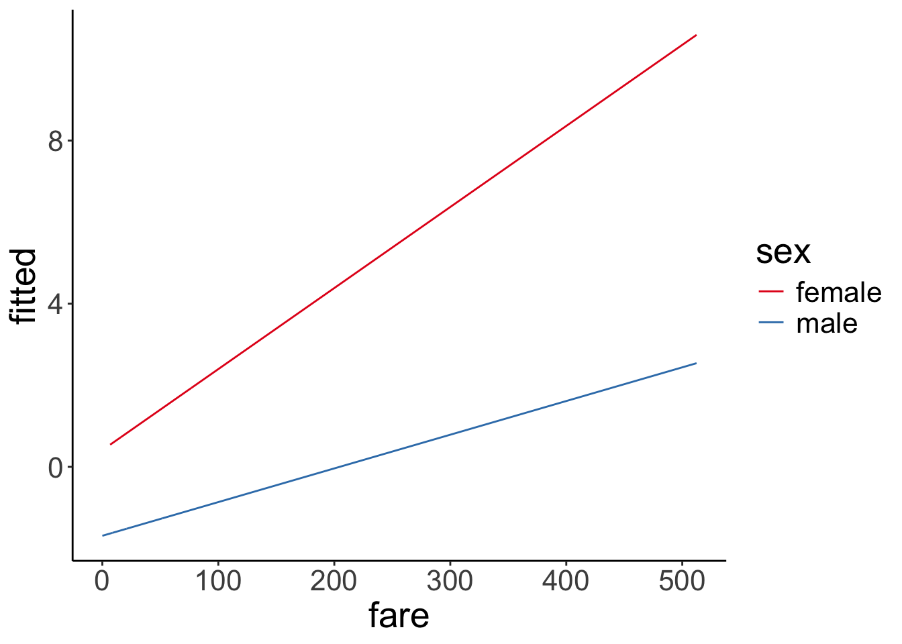
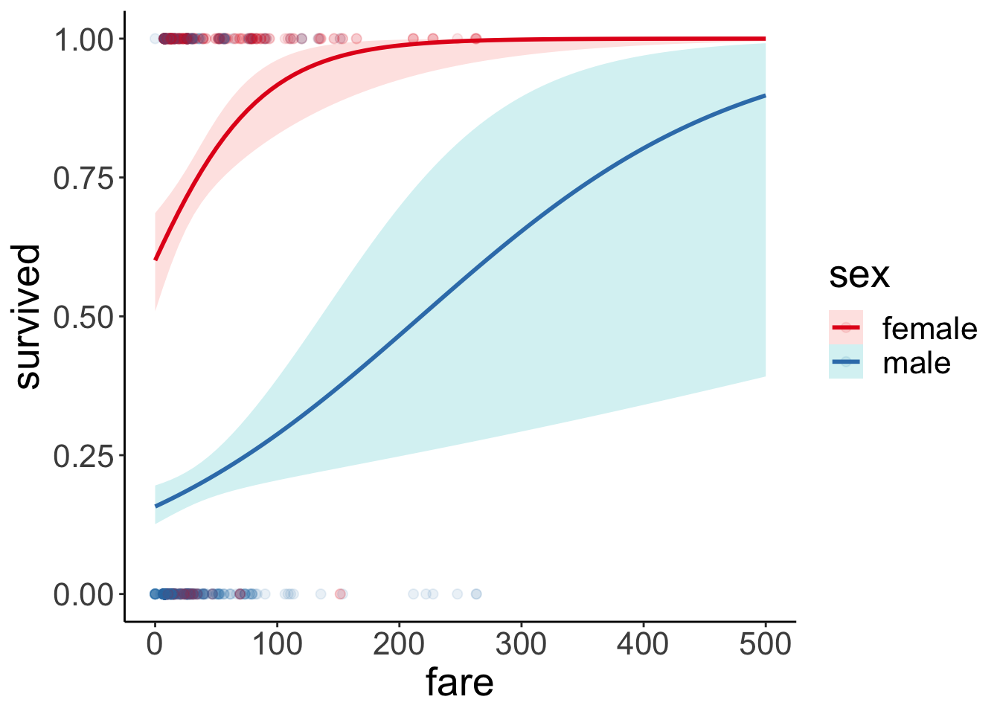
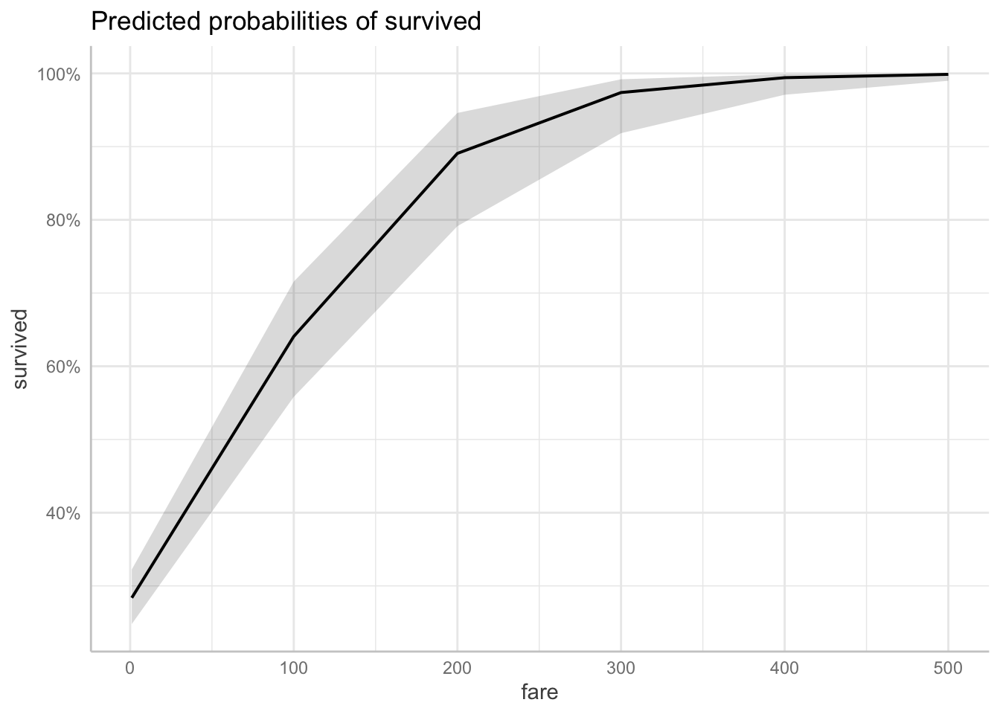
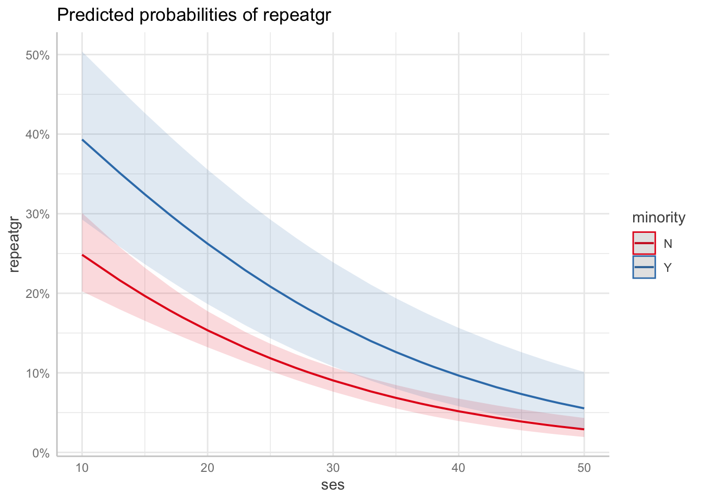

Chapter 21 Generalized linear model
21.1 Learning goals
- Logistic regression.
- Logit transform.
- Fitting a logistic regression in R.
- Visualizing and interpreting model predictions.
- Simulating data from a logistic regression.
- Assessing model fit.
- Testing hypotheses.
- Reporting results.
- Mixed effects logistic regression.
21.2 Load packages and set plotting theme
library("knitr") # for knitting RMarkdown
library("titanic") # titanic dataset
library("kableExtra") # for making nice tables
library("janitor") # for cleaning column names
library("broom") # for tidying up linear models
library("lme4") # for linear mixed effects models
library("boot") # for bootstrapping (also has an inverse logit function)
library("ggeffects") # for showing effects in linear, generalized linear, and other models
library("afex") # for significance testing of mixed effects models
library("emmeans") # for the joint_tests() function
library("tidyverse") # for wrangling, plotting, etc. theme_set(theme_classic() + #set the theme
theme(text = element_text(size = 20))) #set the default text size
opts_chunk$set(comment = "",
fig.show = "hold")21.3 Load data set
df.titanic = titanic_train %>%
clean_names() %>%
mutate(sex = as.factor(sex))Let’s take a quick look at the data:
df.titanic %>%
glimpse()Rows: 891
Columns: 12
$ passenger_id <int> 1, 2, 3, 4, 5, 6, 7, 8, 9, 10, 11, 12, 13, 14, 15, 16, 17…
$ survived <int> 0, 1, 1, 1, 0, 0, 0, 0, 1, 1, 1, 1, 0, 0, 0, 1, 0, 1, 0, …
$ pclass <int> 3, 1, 3, 1, 3, 3, 1, 3, 3, 2, 3, 1, 3, 3, 3, 2, 3, 2, 3, …
$ name <chr> "Braund, Mr. Owen Harris", "Cumings, Mrs. John Bradley (F…
$ sex <fct> male, female, female, female, male, male, male, male, fem…
$ age <dbl> 22, 38, 26, 35, 35, NA, 54, 2, 27, 14, 4, 58, 20, 39, 14,…
$ sib_sp <int> 1, 1, 0, 1, 0, 0, 0, 3, 0, 1, 1, 0, 0, 1, 0, 0, 4, 0, 1, …
$ parch <int> 0, 0, 0, 0, 0, 0, 0, 1, 2, 0, 1, 0, 0, 5, 0, 0, 1, 0, 0, …
$ ticket <chr> "A/5 21171", "PC 17599", "STON/O2. 3101282", "113803", "3…
$ fare <dbl> 7.2500, 71.2833, 7.9250, 53.1000, 8.0500, 8.4583, 51.8625…
$ cabin <chr> "", "C85", "", "C123", "", "", "E46", "", "", "", "G6", "…
$ embarked <chr> "S", "C", "S", "S", "S", "Q", "S", "S", "S", "C", "S", "S…# Table of the first 10 entries
df.titanic %>%
head(10) %>%
kable(digits = 2) %>%
kable_styling(bootstrap_options = "striped",
full_width = F)| passenger_id | survived | pclass | name | sex | age | sib_sp | parch | ticket | fare | cabin | embarked |
|---|---|---|---|---|---|---|---|---|---|---|---|
| 1 | 0 | 3 | Braund, Mr. Owen Harris | male | 22 | 1 | 0 | A/5 21171 | 7.25 | S | |
| 2 | 1 | 1 | Cumings, Mrs. John Bradley (Florence Briggs Thayer) | female | 38 | 1 | 0 | PC 17599 | 71.28 | C85 | C |
| 3 | 1 | 3 | Heikkinen, Miss. Laina | female | 26 | 0 | 0 | STON/O2. 3101282 | 7.92 | S | |
| 4 | 1 | 1 | Futrelle, Mrs. Jacques Heath (Lily May Peel) | female | 35 | 1 | 0 | 113803 | 53.10 | C123 | S |
| 5 | 0 | 3 | Allen, Mr. William Henry | male | 35 | 0 | 0 | 373450 | 8.05 | S | |
| 6 | 0 | 3 | Moran, Mr. James | male | NA | 0 | 0 | 330877 | 8.46 | Q | |
| 7 | 0 | 1 | McCarthy, Mr. Timothy J | male | 54 | 0 | 0 | 17463 | 51.86 | E46 | S |
| 8 | 0 | 3 | Palsson, Master. Gosta Leonard | male | 2 | 3 | 1 | 349909 | 21.08 | S | |
| 9 | 1 | 3 | Johnson, Mrs. Oscar W (Elisabeth Vilhelmina Berg) | female | 27 | 0 | 2 | 347742 | 11.13 | S | |
| 10 | 1 | 2 | Nasser, Mrs. Nicholas (Adele Achem) | female | 14 | 1 | 0 | 237736 | 30.07 | C |
21.4 Logistic regression
Let’s see if we can predict whether or not a passenger survived based on the price of their ticket.
Let’s run a simple regression first:
# fit a linear model
fit.lm = lm(formula = survived ~ 1 + fare,
data = df.titanic)
# summarize the results
fit.lm %>%
summary()
Call:
lm(formula = survived ~ 1 + fare, data = df.titanic)
Residuals:
Min 1Q Median 3Q Max
-0.9653 -0.3391 -0.3222 0.6044 0.6973
Coefficients:
Estimate Std. Error t value Pr(>|t|)
(Intercept) 0.3026994 0.0187849 16.114 < 2e-16 ***
fare 0.0025195 0.0003174 7.939 6.12e-15 ***
---
Signif. codes: 0 '***' 0.001 '**' 0.01 '*' 0.05 '.' 0.1 ' ' 1
Residual standard error: 0.4705 on 889 degrees of freedom
Multiple R-squared: 0.06621, Adjusted R-squared: 0.06516
F-statistic: 63.03 on 1 and 889 DF, p-value: 6.12e-15Look’s like fare is a significant predictor of whether or not a person survived. Let’s visualize the model’s predictions:
ggplot(data = df.titanic,
mapping = aes(x = fare,
y = survived)) +
geom_smooth(method = "lm") +
geom_point() +
labs(y = "survived")
This doesn’t look good! The model predicts intermediate values of survived (which doesn’t make sense given that a person either survived or didn’t survive). Furthermore, the model predicts values greater than 1 for fares greather than ~ 300.
Let’s run a logistic regression instead.
# fit a logistic regression
fit.glm = glm(formula = survived ~ 1 + fare,
family = "binomial",
data = df.titanic)
fit.glm %>%
summary()
Call:
glm(formula = survived ~ 1 + fare, family = "binomial", data = df.titanic)
Deviance Residuals:
Min 1Q Median 3Q Max
-2.4906 -0.8878 -0.8531 1.3429 1.5942
Coefficients:
Estimate Std. Error z value Pr(>|z|)
(Intercept) -0.941330 0.095129 -9.895 < 2e-16 ***
fare 0.015197 0.002232 6.810 9.79e-12 ***
---
Signif. codes: 0 '***' 0.001 '**' 0.01 '*' 0.05 '.' 0.1 ' ' 1
(Dispersion parameter for binomial family taken to be 1)
Null deviance: 1186.7 on 890 degrees of freedom
Residual deviance: 1117.6 on 889 degrees of freedom
AIC: 1121.6
Number of Fisher Scoring iterations: 4And let’s visualize the predictions of the logistic regression:
ggplot(data = df.titanic,
mapping = aes(x = fare,
y = survived)) +
geom_smooth(method = "glm",
method.args = list(family = "binomial")) +
geom_point() +
labs(y = "p(survived)")Much better! Note that we’ve changed the interpretation of our dependent variable. We are now predicting the probability that a person survived based on their fare. The model now only predicts values between 0 and 1. To achieve this, we apply a logit transform to the outcome variable like so:
\[ \ln(\frac{\pi_i}{1-\pi_i}) = b_0 + b_1 \cdot X_i + e_i \] where \(\pi_i\) is the probability of passenger \(i\) having survived. Importantly, this affects our interpretation of the model parameters. They are now defined in log-odds, and can apply an inverse logit transformation to turn this back into a probability:
With
\[ \pi = P(Y = 1) \] and the logit transformation
\[ \ln(\frac{\pi}{1-\pi}) = V, \] where \(V\) is just a placeholder for our linear model formula, we can go back to \(\pi\) through the inverse logit transformation like so:
\[
\pi = \frac{e^V}{1 + e^V}
\]
In R, we can use log(x) to calculate the natural logarithm \(\ln(x)\), and exp(x) to calculate e^x.
21.4.1 Interpreting the parameters
fit.glm %>%
summary()
Call:
glm(formula = survived ~ 1 + fare, family = "binomial", data = df.titanic)
Deviance Residuals:
Min 1Q Median 3Q Max
-2.4906 -0.8878 -0.8531 1.3429 1.5942
Coefficients:
Estimate Std. Error z value Pr(>|z|)
(Intercept) -0.941330 0.095129 -9.895 < 2e-16 ***
fare 0.015197 0.002232 6.810 9.79e-12 ***
---
Signif. codes: 0 '***' 0.001 '**' 0.01 '*' 0.05 '.' 0.1 ' ' 1
(Dispersion parameter for binomial family taken to be 1)
Null deviance: 1186.7 on 890 degrees of freedom
Residual deviance: 1117.6 on 889 degrees of freedom
AIC: 1121.6
Number of Fisher Scoring iterations: 4The estimate for the intercept and fare are in log-odds.
Let’s take a look at the linear model’s predictions in log-odds space.
df.plot = fit.glm %>%
augment() %>%
clean_names()
ggplot(data = df.plot,
mapping = aes(x = fare,
y = fitted)) +
geom_line() Nice, looks like a good old linear model. But what’s the y-axis here? It’s in log-odds (buh!). This is difficult to interpret. Let’s transform the y-axis back to probabilities to make it easier to see what’s going on.
Nice, looks like a good old linear model. But what’s the y-axis here? It’s in log-odds (buh!). This is difficult to interpret. Let’s transform the y-axis back to probabilities to make it easier to see what’s going on.
ggplot(data = df.plot,
mapping = aes(x = fare,
y = inv.logit(fitted))) +
geom_line()
Great! Now the y-axis is back in probability space. We used the inverse logit function inv.logit() to transfer to log-odds back into probabilities.
Let’s check what the intercept of our model is in probability space:
fit.glm %>%
pluck(coefficients, 1) %>%
inv.logit()[1] 0.2806318Here, we see that the intercept is \(p = 0.28\). That is, the predicted chance of survival for someone who didn’t pay any fare at all is 28% according to the model. Interpreting the slope is a little more tricky. Let’s look at a situation first where we have a binary predictor.
21.4.1.1 Logit transform
Here is a visualization of what the odds and log odds transformation look like.
# going from probabilities to odds (ranges from 0 to +infinity)
ggplot(data = tibble(x = seq(0, 1, 0.1)),
mapping = aes(x = x)) +
stat_function(fun = ~ ./(1 - .),
size = 1)
# going from probabilities to log odds (ranges from -infinity to +infinity)
ggplot(data = tibble(x = seq(0, 1, 0.1)),
mapping = aes(x = x)) +
stat_function(fun = ~ log(./(1 - .)),
size = 1)

21.4.2 Binary predictor
Let’s see whether the probability of survival differed between male and female passengers.
fit.glm2 = glm(formula = survived ~ 1 + sex,
family = "binomial",
data = df.titanic)
fit.glm2 %>%
summary()
Call:
glm(formula = survived ~ 1 + sex, family = "binomial", data = df.titanic)
Deviance Residuals:
Min 1Q Median 3Q Max
-1.6462 -0.6471 -0.6471 0.7725 1.8256
Coefficients:
Estimate Std. Error z value Pr(>|z|)
(Intercept) 1.0566 0.1290 8.191 2.58e-16 ***
sexmale -2.5137 0.1672 -15.036 < 2e-16 ***
---
Signif. codes: 0 '***' 0.001 '**' 0.01 '*' 0.05 '.' 0.1 ' ' 1
(Dispersion parameter for binomial family taken to be 1)
Null deviance: 1186.7 on 890 degrees of freedom
Residual deviance: 917.8 on 889 degrees of freedom
AIC: 921.8
Number of Fisher Scoring iterations: 4It looks like it did! Let’s visualize:
df.titanic %>%
mutate(survived = factor(survived, labels = c("died", "survived"))) %>%
ggplot(data = .,
mapping = aes(x = sex,
fill = survived)) +
geom_bar(position = "fill",
color = "black") +
scale_fill_brewer(palette = "Set1") +
labs(x = "",
fill = "",
y = "probability")
And let’s interpret the parameters by applying the inverse logit transform. To get the prediction for female passengers we get
\[ \widehat{\ln(\frac{\pi_i}{1-\pi_i})} = b_0 + b_1 \cdot \text{sex}_i = b_0 + b_1 \cdot 0 = b_0 \] since we dummy coded the predictor and female is our reference category. To get the predicted probability of survival for women we do the logit transform:
\[ \pi = \frac{e^{b_0}}{1 + e^{b_0}} \] The predicted probability is:
fit.glm2 %>%
pluck(coefficients, 1) %>%
inv.logit()[1] 0.7420382To get the prediction for male passengers we have:
\[ \widehat{\ln(\frac{\pi_i}{1-\pi_i})} = b_0 + b_1 \cdot \text{sex}_i = b_0 + b_1 \cdot 1 = b_0 + b_1 \] Applying the logit transform like so
\[ \pi = \frac{e^{b_0 + b_1}}{1 + e^{b_0 + b_1}} \]
The predicted probability of male passengers surviving is:
fit.glm2 %>%
pluck(coefficients) %>%
sum() %>%
inv.logit()[1] 0.1889081Here is the same information in a table:
df.titanic %>%
count(sex, survived) %>%
mutate(p = n / sum(n)) %>%
group_by(sex) %>%
mutate(`p(survived|sex)` = p / sum(p))# A tibble: 4 × 5
# Groups: sex [2]
sex survived n p `p(survived|sex)`
<fct> <int> <int> <dbl> <dbl>
1 female 0 81 0.0909 0.258
2 female 1 233 0.262 0.742
3 male 0 468 0.525 0.811
4 male 1 109 0.122 0.18921.4.3 Continuous predictor
To interpret the predictions when a continuous predictor is involved, it’s easiest to consider a few concrete cases. Here, I use the augment() function from the “broom” package to get the model’s predictions for some values of interest:
fit.glm %>%
augment(newdata = tibble(fare = c(0, 10, 50, 100, 500))) %>%
clean_names() %>%
select(fare, prediction = fitted) %>%
mutate(`p(survival)` = inv.logit(prediction))# A tibble: 5 × 3
fare prediction `p(survival)`
<dbl> <dbl> <dbl>
1 0 -0.941 0.281
2 10 -0.789 0.312
3 50 -0.181 0.455
4 100 0.578 0.641
5 500 6.66 0.99921.4.4 Several predictors
Let’s fit a logistic regression that predicts the probability of survival based both on the passenger’s sex and what fare they paid (allowing for an interaction of the two predictors):
fit.glm3 = glm(formula = survived ~ 1 + sex * fare,
family = "binomial",
data = df.titanic)
fit.glm3 %>%
summary()
Call:
glm(formula = survived ~ 1 + sex * fare, family = "binomial",
data = df.titanic)
Deviance Residuals:
Min 1Q Median 3Q Max
-2.6280 -0.6279 -0.5991 0.8172 1.9288
Coefficients:
Estimate Std. Error z value Pr(>|z|)
(Intercept) 0.408428 0.189999 2.150 0.031584 *
sexmale -2.099345 0.230291 -9.116 < 2e-16 ***
fare 0.019878 0.005372 3.701 0.000215 ***
sexmale:fare -0.011617 0.005934 -1.958 0.050252 .
---
Signif. codes: 0 '***' 0.001 '**' 0.01 '*' 0.05 '.' 0.1 ' ' 1
(Dispersion parameter for binomial family taken to be 1)
Null deviance: 1186.66 on 890 degrees of freedom
Residual deviance: 879.85 on 887 degrees of freedom
AIC: 887.85
Number of Fisher Scoring iterations: 5Make sure not to interpret the significance test on the coefficients here as main effects. Based on this summary table, you cannot say whether there is a significant difference between male vs. female passenger in their probability of survival. What coefficient for sexmale captures is whether there is a significant difference between male and female passengers who paid a fare of 0. That is, it’s the predicted difference between the reference category (female) and the other category (male) when all other predictors are 0.
Let’s visualize the model predictions:
ggplot(data = df.titanic,
mapping = aes(x = fare,
y = survived,
color = sex)) +
geom_point(alpha = 0.1, size = 2) +
geom_smooth(method = "glm",
method.args = list(family = "binomial"),
alpha = 0.2,
aes(fill = sex)) +
scale_color_brewer(palette = "Set1") Just for kicks, to get a better sense for what the interaction looks like, here is the visualization in log-odds space:
Just for kicks, to get a better sense for what the interaction looks like, here is the visualization in log-odds space:
fit.glm3 %>%
augment() %>%
clean_names() %>%
ggplot(data = .,
mapping = aes(x = fare,
color = sex,
y = fitted)) +
geom_line() +
scale_color_brewer(palette = "Set1")
Let’s see how large the difference between genders is once we take into account how much each person paid for the fair:
ggpredict(fit.glm3,
terms = c("sex"))# Predicted probabilities of survived
sex | Predicted | 95% CI
---------------------------------
female | 0.74 | [0.69, 0.79]
male | 0.19 | [0.16, 0.23]
Adjusted for:
* fare = 32.20We notice that there is one outlier who was male and paid a $500 fare (or maybe this is a mistake in the data entry?!). Let’s remove this outlier and see what happens:
fit.glm3_no_outlier = glm(formula = survived ~ 1 + sex * fare,
family = "binomial",
data = df.titanic %>%
filter(fare < 500))
fit.glm3_no_outlier %>%
summary()
Call:
glm(formula = survived ~ 1 + sex * fare, family = "binomial",
data = df.titanic %>% filter(fare < 500))
Deviance Residuals:
Min 1Q Median 3Q Max
-2.6280 -0.6288 -0.6018 0.8172 1.9226
Coefficients:
Estimate Std. Error z value Pr(>|z|)
(Intercept) 0.408436 0.190019 2.149 0.031598 *
sexmale -2.085344 0.232260 -8.979 < 2e-16 ***
fare 0.019878 0.005373 3.699 0.000216 ***
sexmale:fare -0.012178 0.006066 -2.008 0.044688 *
---
Signif. codes: 0 '***' 0.001 '**' 0.01 '*' 0.05 '.' 0.1 ' ' 1
(Dispersion parameter for binomial family taken to be 1)
Null deviance: 1180.89 on 887 degrees of freedom
Residual deviance: 879.51 on 884 degrees of freedom
AIC: 887.51
Number of Fisher Scoring iterations: 5df.titanic %>%
filter(fare < 500) %>%
mutate(sex = as.factor(sex)) %>%
ggplot(data = .,
mapping = aes(x = fare,
y = survived,
color = sex)) +
geom_point(alpha = 0.1, size = 2) +
stat_smooth(method = "glm",
method.args = list(family = "binomial"),
alpha = 0.2,
fullrange = T,
aes(fill = sex)) +
scale_color_brewer(palette = "Set1") +
scale_x_continuous(limits = c(0, 500))
There is still a clear difference between female and male passengers, but the prediction for male passengers has changed a bit. Let’s look at a concrete example:
# with the outlier:
# predicted probability of survival for a male passenger who paid $200 for their fare
inv.logit(fit.glm3$coefficients[1] + fit.glm3$coefficients[2] +
fit.glm3$coefficients[3] * 200 + fit.glm3$coefficients[4] * 200)(Intercept)
0.4903402 # without the outlier:
# predicted probability of survival for a male passenger who paid $200 for their fare
inv.logit(fit.glm3_no_outlier$coefficients[1] +
fit.glm3_no_outlier$coefficients[2] +
fit.glm3_no_outlier$coefficients[3] * 200 +
fit.glm3_no_outlier$coefficients[4] * 200)(Intercept)
0.4658284 With the outlier removed, the predicted probability of survival for a male passenger who paid $200 decreases from 49% to 47%.
21.4.5 Using the “ggeffects” package
The “ggeffects” package helps with the interpretation of the results. It applies the inverse logit transform for us, and shows the predictions for a range of cases.
# show effects
ggeffect(model = fit.glm,
terms = "fare [0, 100, 200, 300, 400, 500]")# Predicted probabilities of survived
fare | Predicted | 95% CI
-------------------------------
0 | 0.28 | [0.24, 0.32]
100 | 0.64 | [0.56, 0.72]
200 | 0.89 | [0.79, 0.95]
300 | 0.97 | [0.92, 0.99]
400 | 0.99 | [0.97, 1.00]
500 | 1.00 | [0.99, 1.00]I’ve used the [] construction to specify for what values of the predictor fare, I’d like get the predicted values. Here, the prediction is marginalized across both women and men.
We can also get a plot of the model predictions like so:
ggeffect(model = fit.glm,
terms = "fare [0, 100, 200, 300, 400, 500]") %>%
plot()
And, we can also get the predicted probability of survival for sex marginalized over the fare, using the model which included both sex and fare, as well as its interaction as predictors.
ggeffect(model = fit.glm3,
terms = "sex")# Predicted probabilities of survived
sex | Predicted | 95% CI
---------------------------------
female | 0.74 | [0.69, 0.79]
male | 0.19 | [0.16, 0.23]Finally, we can ask for predictions for specific combinations of our predictor variables, by using the ggpredict() function.
ggpredict(model = fit.glm3,
terms = c("sex", "fare [200]"))# Predicted probabilities of survived
sex | Predicted | 95% CI
---------------------------------
female | 0.99 | [0.93, 1.00]
male | 0.49 | [0.29, 0.70]The example above, shows the predicted probability of survival for male vs. female passengers, assuming that they paid 200 for the fare.
21.5 Simulate a logistic regression
As always, to better understand a statistical modeling procedure, it’s helpful to simulate data from the assumed data-generating process, fit the model, and see whether we can reconstruct the parameters.
# make example reproducible
set.seed(1)
# set parameters
sample_size = 1000
b0 = 0
b1 = 1
# b1 = 8
# generate data
df.data = tibble(x = rnorm(n = sample_size),
y = b0 + b1 * x,
p = inv.logit(y)) %>%
mutate(response = rbinom(n(), size = 1, p = p))
# fit model
fit = glm(formula = response ~ 1 + x,
family = "binomial",
data = df.data)
# model summary
fit %>%
summary()
Call:
glm(formula = response ~ 1 + x, family = "binomial", data = df.data)
Deviance Residuals:
Min 1Q Median 3Q Max
-2.1137 -1.0118 -0.4591 1.0287 2.2591
Coefficients:
Estimate Std. Error z value Pr(>|z|)
(Intercept) -0.06214 0.06918 -0.898 0.369
x 0.92905 0.07937 11.705 <2e-16 ***
---
Signif. codes: 0 '***' 0.001 '**' 0.01 '*' 0.05 '.' 0.1 ' ' 1
(Dispersion parameter for binomial family taken to be 1)
Null deviance: 1385.4 on 999 degrees of freedom
Residual deviance: 1209.6 on 998 degrees of freedom
AIC: 1213.6
Number of Fisher Scoring iterations: 3df.data %>%
kable(digits = 2) %>%
kable_styling(bootstrap_options = "striped",
full_width = F)| x | y | p | response |
|---|---|---|---|
| -0.63 | -0.63 | 0.35 | 1 |
| 0.18 | 0.18 | 0.55 | 0 |
| -0.84 | -0.84 | 0.30 | 1 |
| 1.60 | 1.60 | 0.83 | 1 |
| 0.33 | 0.33 | 0.58 | 1 |
| -0.82 | -0.82 | 0.31 | 0 |
| 0.49 | 0.49 | 0.62 | 1 |
| 0.74 | 0.74 | 0.68 | 1 |
| 0.58 | 0.58 | 0.64 | 1 |
| -0.31 | -0.31 | 0.42 | 0 |
| 1.51 | 1.51 | 0.82 | 1 |
| 0.39 | 0.39 | 0.60 | 1 |
| -0.62 | -0.62 | 0.35 | 1 |
| -2.21 | -2.21 | 0.10 | 0 |
| 1.12 | 1.12 | 0.75 | 1 |
| -0.04 | -0.04 | 0.49 | 0 |
| -0.02 | -0.02 | 0.50 | 0 |
| 0.94 | 0.94 | 0.72 | 1 |
| 0.82 | 0.82 | 0.69 | 0 |
| 0.59 | 0.59 | 0.64 | 1 |
| 0.92 | 0.92 | 0.71 | 1 |
| 0.78 | 0.78 | 0.69 | 0 |
| 0.07 | 0.07 | 0.52 | 1 |
| -1.99 | -1.99 | 0.12 | 0 |
| 0.62 | 0.62 | 0.65 | 1 |
| -0.06 | -0.06 | 0.49 | 1 |
| -0.16 | -0.16 | 0.46 | 0 |
| -1.47 | -1.47 | 0.19 | 0 |
| -0.48 | -0.48 | 0.38 | 1 |
| 0.42 | 0.42 | 0.60 | 1 |
| 1.36 | 1.36 | 0.80 | 1 |
| -0.10 | -0.10 | 0.47 | 0 |
| 0.39 | 0.39 | 0.60 | 1 |
| -0.05 | -0.05 | 0.49 | 1 |
| -1.38 | -1.38 | 0.20 | 0 |
| -0.41 | -0.41 | 0.40 | 0 |
| -0.39 | -0.39 | 0.40 | 0 |
| -0.06 | -0.06 | 0.49 | 1 |
| 1.10 | 1.10 | 0.75 | 0 |
| 0.76 | 0.76 | 0.68 | 1 |
| -0.16 | -0.16 | 0.46 | 0 |
| -0.25 | -0.25 | 0.44 | 0 |
| 0.70 | 0.70 | 0.67 | 0 |
| 0.56 | 0.56 | 0.64 | 1 |
| -0.69 | -0.69 | 0.33 | 1 |
| -0.71 | -0.71 | 0.33 | 0 |
| 0.36 | 0.36 | 0.59 | 0 |
| 0.77 | 0.77 | 0.68 | 1 |
| -0.11 | -0.11 | 0.47 | 1 |
| 0.88 | 0.88 | 0.71 | 0 |
| 0.40 | 0.40 | 0.60 | 1 |
| -0.61 | -0.61 | 0.35 | 1 |
| 0.34 | 0.34 | 0.58 | 1 |
| -1.13 | -1.13 | 0.24 | 0 |
| 1.43 | 1.43 | 0.81 | 1 |
| 1.98 | 1.98 | 0.88 | 1 |
| -0.37 | -0.37 | 0.41 | 0 |
| -1.04 | -1.04 | 0.26 | 0 |
| 0.57 | 0.57 | 0.64 | 0 |
| -0.14 | -0.14 | 0.47 | 0 |
| 2.40 | 2.40 | 0.92 | 1 |
| -0.04 | -0.04 | 0.49 | 1 |
| 0.69 | 0.69 | 0.67 | 1 |
| 0.03 | 0.03 | 0.51 | 0 |
| -0.74 | -0.74 | 0.32 | 0 |
| 0.19 | 0.19 | 0.55 | 0 |
| -1.80 | -1.80 | 0.14 | 0 |
| 1.47 | 1.47 | 0.81 | 1 |
| 0.15 | 0.15 | 0.54 | 0 |
| 2.17 | 2.17 | 0.90 | 1 |
| 0.48 | 0.48 | 0.62 | 0 |
| -0.71 | -0.71 | 0.33 | 1 |
| 0.61 | 0.61 | 0.65 | 1 |
| -0.93 | -0.93 | 0.28 | 1 |
| -1.25 | -1.25 | 0.22 | 1 |
| 0.29 | 0.29 | 0.57 | 1 |
| -0.44 | -0.44 | 0.39 | 1 |
| 0.00 | 0.00 | 0.50 | 1 |
| 0.07 | 0.07 | 0.52 | 1 |
| -0.59 | -0.59 | 0.36 | 0 |
| -0.57 | -0.57 | 0.36 | 1 |
| -0.14 | -0.14 | 0.47 | 1 |
| 1.18 | 1.18 | 0.76 | 1 |
| -1.52 | -1.52 | 0.18 | 0 |
| 0.59 | 0.59 | 0.64 | 1 |
| 0.33 | 0.33 | 0.58 | 0 |
| 1.06 | 1.06 | 0.74 | 1 |
| -0.30 | -0.30 | 0.42 | 1 |
| 0.37 | 0.37 | 0.59 | 0 |
| 0.27 | 0.27 | 0.57 | 1 |
| -0.54 | -0.54 | 0.37 | 1 |
| 1.21 | 1.21 | 0.77 | 1 |
| 1.16 | 1.16 | 0.76 | 0 |
| 0.70 | 0.70 | 0.67 | 1 |
| 1.59 | 1.59 | 0.83 | 1 |
| 0.56 | 0.56 | 0.64 | 1 |
| -1.28 | -1.28 | 0.22 | 0 |
| -0.57 | -0.57 | 0.36 | 1 |
| -1.22 | -1.22 | 0.23 | 0 |
| -0.47 | -0.47 | 0.38 | 0 |
| -0.62 | -0.62 | 0.35 | 0 |
| 0.04 | 0.04 | 0.51 | 0 |
| -0.91 | -0.91 | 0.29 | 0 |
| 0.16 | 0.16 | 0.54 | 1 |
| -0.65 | -0.65 | 0.34 | 0 |
| 1.77 | 1.77 | 0.85 | 0 |
| 0.72 | 0.72 | 0.67 | 0 |
| 0.91 | 0.91 | 0.71 | 1 |
| 0.38 | 0.38 | 0.59 | 0 |
| 1.68 | 1.68 | 0.84 | 1 |
| -0.64 | -0.64 | 0.35 | 0 |
| -0.46 | -0.46 | 0.39 | 0 |
| 1.43 | 1.43 | 0.81 | 0 |
| -0.65 | -0.65 | 0.34 | 1 |
| -0.21 | -0.21 | 0.45 | 0 |
| -0.39 | -0.39 | 0.40 | 0 |
| -0.32 | -0.32 | 0.42 | 1 |
| -0.28 | -0.28 | 0.43 | 1 |
| 0.49 | 0.49 | 0.62 | 1 |
| -0.18 | -0.18 | 0.46 | 1 |
| -0.51 | -0.51 | 0.38 | 0 |
| 1.34 | 1.34 | 0.79 | 1 |
| -0.21 | -0.21 | 0.45 | 1 |
| -0.18 | -0.18 | 0.46 | 0 |
| -0.10 | -0.10 | 0.47 | 1 |
| 0.71 | 0.71 | 0.67 | 1 |
| -0.07 | -0.07 | 0.48 | 0 |
| -0.04 | -0.04 | 0.49 | 0 |
| -0.68 | -0.68 | 0.34 | 0 |
| -0.32 | -0.32 | 0.42 | 1 |
| 0.06 | 0.06 | 0.52 | 1 |
| -0.59 | -0.59 | 0.36 | 1 |
| 0.53 | 0.53 | 0.63 | 1 |
| -1.52 | -1.52 | 0.18 | 0 |
| 0.31 | 0.31 | 0.58 | 1 |
| -1.54 | -1.54 | 0.18 | 0 |
| -0.30 | -0.30 | 0.43 | 0 |
| -0.53 | -0.53 | 0.37 | 1 |
| -0.65 | -0.65 | 0.34 | 0 |
| -0.06 | -0.06 | 0.49 | 0 |
| -1.91 | -1.91 | 0.13 | 0 |
| 1.18 | 1.18 | 0.76 | 1 |
| -1.66 | -1.66 | 0.16 | 0 |
| -0.46 | -0.46 | 0.39 | 0 |
| -1.12 | -1.12 | 0.25 | 0 |
| -0.75 | -0.75 | 0.32 | 0 |
| 2.09 | 2.09 | 0.89 | 1 |
| 0.02 | 0.02 | 0.50 | 1 |
| -1.29 | -1.29 | 0.22 | 1 |
| -1.64 | -1.64 | 0.16 | 0 |
| 0.45 | 0.45 | 0.61 | 1 |
| -0.02 | -0.02 | 0.50 | 1 |
| -0.32 | -0.32 | 0.42 | 0 |
| -0.93 | -0.93 | 0.28 | 0 |
| -1.49 | -1.49 | 0.18 | 0 |
| -1.08 | -1.08 | 0.25 | 0 |
| 1.00 | 1.00 | 0.73 | 1 |
| -0.62 | -0.62 | 0.35 | 0 |
| -1.38 | -1.38 | 0.20 | 0 |
| 1.87 | 1.87 | 0.87 | 1 |
| 0.43 | 0.43 | 0.60 | 0 |
| -0.24 | -0.24 | 0.44 | 1 |
| 1.06 | 1.06 | 0.74 | 1 |
| 0.89 | 0.89 | 0.71 | 1 |
| -0.62 | -0.62 | 0.35 | 1 |
| 2.21 | 2.21 | 0.90 | 1 |
| -0.26 | -0.26 | 0.44 | 1 |
| -1.42 | -1.42 | 0.19 | 0 |
| -0.14 | -0.14 | 0.46 | 0 |
| 0.21 | 0.21 | 0.55 | 1 |
| 2.31 | 2.31 | 0.91 | 1 |
| 0.11 | 0.11 | 0.53 | 1 |
| 0.46 | 0.46 | 0.61 | 0 |
| -0.08 | -0.08 | 0.48 | 1 |
| -0.33 | -0.33 | 0.42 | 0 |
| -0.03 | -0.03 | 0.49 | 0 |
| 0.79 | 0.79 | 0.69 | 0 |
| 2.08 | 2.08 | 0.89 | 1 |
| 1.03 | 1.03 | 0.74 | 1 |
| 1.21 | 1.21 | 0.77 | 1 |
| -1.23 | -1.23 | 0.23 | 1 |
| 0.98 | 0.98 | 0.73 | 0 |
| 0.22 | 0.22 | 0.55 | 0 |
| -1.47 | -1.47 | 0.19 | 0 |
| 0.52 | 0.52 | 0.63 | 1 |
| -0.16 | -0.16 | 0.46 | 1 |
| 1.46 | 1.46 | 0.81 | 1 |
| -0.77 | -0.77 | 0.32 | 0 |
| -0.43 | -0.43 | 0.39 | 0 |
| -0.93 | -0.93 | 0.28 | 0 |
| -0.18 | -0.18 | 0.46 | 0 |
| 0.40 | 0.40 | 0.60 | 0 |
| -0.73 | -0.73 | 0.32 | 1 |
| 0.83 | 0.83 | 0.70 | 0 |
| -1.21 | -1.21 | 0.23 | 1 |
| -1.05 | -1.05 | 0.26 | 0 |
| 1.44 | 1.44 | 0.81 | 1 |
| -1.02 | -1.02 | 0.27 | 0 |
| 0.41 | 0.41 | 0.60 | 0 |
| -0.38 | -0.38 | 0.41 | 0 |
| 0.41 | 0.41 | 0.60 | 1 |
| 1.69 | 1.69 | 0.84 | 0 |
| 1.59 | 1.59 | 0.83 | 1 |
| -0.33 | -0.33 | 0.42 | 0 |
| -2.29 | -2.29 | 0.09 | 1 |
| 2.50 | 2.50 | 0.92 | 1 |
| 0.67 | 0.67 | 0.66 | 1 |
| 0.54 | 0.54 | 0.63 | 1 |
| -0.01 | -0.01 | 0.50 | 1 |
| 0.51 | 0.51 | 0.62 | 1 |
| -0.16 | -0.16 | 0.46 | 1 |
| 0.42 | 0.42 | 0.60 | 0 |
| -0.40 | -0.40 | 0.40 | 0 |
| -1.37 | -1.37 | 0.20 | 0 |
| 0.99 | 0.99 | 0.73 | 1 |
| 1.52 | 1.52 | 0.82 | 1 |
| -0.31 | -0.31 | 0.42 | 0 |
| -1.25 | -1.25 | 0.22 | 0 |
| 0.64 | 0.64 | 0.66 | 0 |
| -0.04 | -0.04 | 0.49 | 0 |
| -1.73 | -1.73 | 0.15 | 0 |
| 0.00 | 0.00 | 0.50 | 0 |
| -0.63 | -0.63 | 0.35 | 1 |
| -0.34 | -0.34 | 0.42 | 0 |
| -1.16 | -1.16 | 0.24 | 0 |
| 1.80 | 1.80 | 0.86 | 1 |
| -0.33 | -0.33 | 0.42 | 1 |
| -1.61 | -1.61 | 0.17 | 0 |
| 0.20 | 0.20 | 0.55 | 1 |
| 0.26 | 0.26 | 0.57 | 0 |
| -0.99 | -0.99 | 0.27 | 1 |
| -2.89 | -2.89 | 0.05 | 0 |
| -0.64 | -0.64 | 0.35 | 0 |
| 0.57 | 0.57 | 0.64 | 1 |
| -0.06 | -0.06 | 0.49 | 0 |
| -0.10 | -0.10 | 0.48 | 1 |
| 0.56 | 0.56 | 0.64 | 1 |
| -1.19 | -1.19 | 0.23 | 0 |
| 1.10 | 1.10 | 0.75 | 1 |
| -0.01 | -0.01 | 0.50 | 1 |
| 0.71 | 0.71 | 0.67 | 1 |
| 1.03 | 1.03 | 0.74 | 1 |
| 0.22 | 0.22 | 0.56 | 1 |
| -0.88 | -0.88 | 0.29 | 0 |
| 1.16 | 1.16 | 0.76 | 1 |
| -2.00 | -2.00 | 0.12 | 0 |
| -0.54 | -0.54 | 0.37 | 0 |
| -0.26 | -0.26 | 0.44 | 0 |
| -0.17 | -0.17 | 0.46 | 1 |
| 1.02 | 1.02 | 0.74 | 0 |
| 0.14 | 0.14 | 0.53 | 1 |
| 0.41 | 0.41 | 0.60 | 0 |
| -0.07 | -0.07 | 0.48 | 0 |
| -0.25 | -0.25 | 0.44 | 0 |
| 0.70 | 0.70 | 0.67 | 1 |
| 1.15 | 1.15 | 0.76 | 1 |
| -2.40 | -2.40 | 0.08 | 0 |
| 0.57 | 0.57 | 0.64 | 1 |
| 0.37 | 0.37 | 0.59 | 1 |
| -0.43 | -0.43 | 0.40 | 1 |
| 0.95 | 0.95 | 0.72 | 0 |
| -0.39 | -0.39 | 0.40 | 0 |
| -0.28 | -0.28 | 0.43 | 0 |
| 0.86 | 0.86 | 0.70 | 1 |
| 1.72 | 1.72 | 0.85 | 1 |
| 0.27 | 0.27 | 0.57 | 1 |
| -0.42 | -0.42 | 0.40 | 0 |
| -1.19 | -1.19 | 0.23 | 1 |
| -0.33 | -0.33 | 0.42 | 0 |
| -0.94 | -0.94 | 0.28 | 1 |
| -0.26 | -0.26 | 0.44 | 1 |
| 0.39 | 0.39 | 0.60 | 0 |
| -0.85 | -0.85 | 0.30 | 0 |
| 2.65 | 2.65 | 0.93 | 1 |
| 0.16 | 0.16 | 0.54 | 1 |
| 1.13 | 1.13 | 0.76 | 0 |
| -2.29 | -2.29 | 0.09 | 1 |
| 0.74 | 0.74 | 0.68 | 1 |
| -1.32 | -1.32 | 0.21 | 0 |
| 0.92 | 0.92 | 0.72 | 0 |
| 0.40 | 0.40 | 0.60 | 0 |
| -0.41 | -0.41 | 0.40 | 1 |
| 1.32 | 1.32 | 0.79 | 1 |
| -0.70 | -0.70 | 0.33 | 0 |
| -0.58 | -0.58 | 0.36 | 0 |
| -1.00 | -1.00 | 0.27 | 1 |
| -0.67 | -0.67 | 0.34 | 1 |
| 0.95 | 0.95 | 0.72 | 1 |
| 0.43 | 0.43 | 0.61 | 0 |
| 1.01 | 1.01 | 0.73 | 1 |
| -0.39 | -0.39 | 0.40 | 0 |
| 0.38 | 0.38 | 0.59 | 1 |
| 0.24 | 0.24 | 0.56 | 1 |
| -1.43 | -1.43 | 0.19 | 0 |
| 1.78 | 1.78 | 0.86 | 1 |
| 0.13 | 0.13 | 0.53 | 1 |
| 0.77 | 0.77 | 0.68 | 0 |
| 0.96 | 0.96 | 0.72 | 1 |
| -0.05 | -0.05 | 0.49 | 0 |
| -0.31 | -0.31 | 0.42 | 1 |
| 0.89 | 0.89 | 0.71 | 1 |
| -1.05 | -1.05 | 0.26 | 1 |
| 1.97 | 1.97 | 0.88 | 1 |
| -0.38 | -0.38 | 0.41 | 1 |
| 1.65 | 1.65 | 0.84 | 1 |
| 1.51 | 1.51 | 0.82 | 1 |
| 0.08 | 0.08 | 0.52 | 1 |
| 0.57 | 0.57 | 0.64 | 0 |
| -1.02 | -1.02 | 0.26 | 0 |
| 0.32 | 0.32 | 0.58 | 0 |
| 1.04 | 1.04 | 0.74 | 1 |
| 0.10 | 0.10 | 0.52 | 1 |
| -0.45 | -0.45 | 0.39 | 0 |
| -0.66 | -0.66 | 0.34 | 0 |
| -0.04 | -0.04 | 0.49 | 0 |
| 1.07 | 1.07 | 0.74 | 1 |
| -0.48 | -0.48 | 0.38 | 0 |
| -0.12 | -0.12 | 0.47 | 0 |
| -1.29 | -1.29 | 0.22 | 0 |
| 0.49 | 0.49 | 0.62 | 0 |
| 1.31 | 1.31 | 0.79 | 1 |
| 1.50 | 1.50 | 0.82 | 1 |
| 0.81 | 0.81 | 0.69 | 0 |
| -1.87 | -1.87 | 0.13 | 0 |
| 0.48 | 0.48 | 0.62 | 1 |
| 0.46 | 0.46 | 0.61 | 1 |
| -0.35 | -0.35 | 0.41 | 0 |
| 0.17 | 0.17 | 0.54 | 0 |
| -0.86 | -0.86 | 0.30 | 0 |
| 0.68 | 0.68 | 0.66 | 0 |
| -0.33 | -0.33 | 0.42 | 0 |
| -1.57 | -1.57 | 0.17 | 0 |
| -0.37 | -0.37 | 0.41 | 1 |
| 1.36 | 1.36 | 0.80 | 1 |
| -0.33 | -0.33 | 0.42 | 0 |
| 0.73 | 0.73 | 0.68 | 0 |
| 0.95 | 0.95 | 0.72 | 1 |
| 0.00 | 0.00 | 0.50 | 1 |
| -0.35 | -0.35 | 0.41 | 0 |
| -0.53 | -0.53 | 0.37 | 1 |
| 0.74 | 0.74 | 0.68 | 1 |
| -1.06 | -1.06 | 0.26 | 0 |
| 0.25 | 0.25 | 0.56 | 1 |
| -0.29 | -0.29 | 0.43 | 1 |
| -2.26 | -2.26 | 0.09 | 0 |
| -1.41 | -1.41 | 0.20 | 1 |
| 0.92 | 0.92 | 0.71 | 0 |
| -0.19 | -0.19 | 0.45 | 1 |
| 0.80 | 0.80 | 0.69 | 0 |
| 1.89 | 1.89 | 0.87 | 1 |
| 1.47 | 1.47 | 0.81 | 0 |
| 0.68 | 0.68 | 0.66 | 0 |
| 0.38 | 0.38 | 0.59 | 1 |
| -0.19 | -0.19 | 0.45 | 1 |
| 1.58 | 1.58 | 0.83 | 1 |
| 0.60 | 0.60 | 0.64 | 1 |
| -1.17 | -1.17 | 0.24 | 0 |
| -0.16 | -0.16 | 0.46 | 1 |
| -1.92 | -1.92 | 0.13 | 0 |
| -0.20 | -0.20 | 0.45 | 0 |
| -2.59 | -2.59 | 0.07 | 1 |
| 1.31 | 1.31 | 0.79 | 1 |
| -0.64 | -0.64 | 0.35 | 0 |
| -0.43 | -0.43 | 0.39 | 0 |
| -0.17 | -0.17 | 0.46 | 0 |
| 0.61 | 0.61 | 0.65 | 0 |
| 0.68 | 0.68 | 0.66 | 1 |
| 0.57 | 0.57 | 0.64 | 0 |
| -0.57 | -0.57 | 0.36 | 1 |
| -1.36 | -1.36 | 0.20 | 0 |
| -0.39 | -0.39 | 0.40 | 1 |
| 0.28 | 0.28 | 0.57 | 1 |
| -0.82 | -0.82 | 0.31 | 0 |
| -0.07 | -0.07 | 0.48 | 0 |
| -1.17 | -1.17 | 0.24 | 0 |
| -0.01 | -0.01 | 0.50 | 1 |
| 0.13 | 0.13 | 0.53 | 0 |
| -0.15 | -0.15 | 0.46 | 1 |
| -0.16 | -0.16 | 0.46 | 0 |
| 1.76 | 1.76 | 0.85 | 1 |
| 0.76 | 0.76 | 0.68 | 0 |
| 1.11 | 1.11 | 0.75 | 1 |
| -0.92 | -0.92 | 0.28 | 0 |
| 0.16 | 0.16 | 0.54 | 0 |
| 1.15 | 1.15 | 0.76 | 1 |
| -0.06 | -0.06 | 0.49 | 1 |
| -2.13 | -2.13 | 0.11 | 0 |
| 0.34 | 0.34 | 0.59 | 1 |
| -1.90 | -1.90 | 0.13 | 0 |
| -0.81 | -0.81 | 0.31 | 0 |
| 1.32 | 1.32 | 0.79 | 1 |
| 0.62 | 0.62 | 0.65 | 1 |
| 1.09 | 1.09 | 0.75 | 1 |
| 0.31 | 0.31 | 0.58 | 1 |
| -0.11 | -0.11 | 0.47 | 0 |
| -0.92 | -0.92 | 0.28 | 0 |
| 1.59 | 1.59 | 0.83 | 1 |
| 0.05 | 0.05 | 0.51 | 1 |
| -0.72 | -0.72 | 0.33 | 0 |
| 0.87 | 0.87 | 0.70 | 1 |
| 1.07 | 1.07 | 0.75 | 1 |
| 1.90 | 1.90 | 0.87 | 1 |
| -0.60 | -0.60 | 0.35 | 1 |
| -0.39 | -0.39 | 0.40 | 1 |
| -0.42 | -0.42 | 0.40 | 0 |
| -0.38 | -0.38 | 0.41 | 0 |
| -0.37 | -0.37 | 0.41 | 0 |
| -0.30 | -0.30 | 0.43 | 1 |
| 1.44 | 1.44 | 0.81 | 1 |
| -0.70 | -0.70 | 0.33 | 0 |
| -0.39 | -0.39 | 0.40 | 1 |
| 0.65 | 0.65 | 0.66 | 0 |
| 1.12 | 1.12 | 0.75 | 1 |
| -0.77 | -0.77 | 0.32 | 0 |
| -0.51 | -0.51 | 0.38 | 0 |
| 0.52 | 0.52 | 0.63 | 1 |
| 1.02 | 1.02 | 0.73 | 0 |
| -0.25 | -0.25 | 0.44 | 1 |
| -1.43 | -1.43 | 0.19 | 1 |
| 1.71 | 1.71 | 0.85 | 1 |
| 1.44 | 1.44 | 0.81 | 1 |
| -0.71 | -0.71 | 0.33 | 1 |
| -0.07 | -0.07 | 0.48 | 1 |
| -1.76 | -1.76 | 0.15 | 0 |
| 0.57 | 0.57 | 0.64 | 1 |
| 1.61 | 1.61 | 0.83 | 1 |
| -1.64 | -1.64 | 0.16 | 0 |
| -0.78 | -0.78 | 0.31 | 0 |
| -0.64 | -0.64 | 0.34 | 1 |
| -0.68 | -0.68 | 0.34 | 0 |
| -2.03 | -2.03 | 0.12 | 0 |
| 0.50 | 0.50 | 0.62 | 0 |
| -1.53 | -1.53 | 0.18 | 1 |
| -0.02 | -0.02 | 0.49 | 0 |
| 0.59 | 0.59 | 0.64 | 1 |
| -0.20 | -0.20 | 0.45 | 1 |
| 0.89 | 0.89 | 0.71 | 0 |
| -0.03 | -0.03 | 0.49 | 1 |
| -0.65 | -0.65 | 0.34 | 0 |
| 0.65 | 0.65 | 0.66 | 0 |
| -0.43 | -0.43 | 0.39 | 0 |
| 1.77 | 1.77 | 0.85 | 1 |
| -0.02 | -0.02 | 0.50 | 1 |
| 0.85 | 0.85 | 0.70 | 1 |
| 0.21 | 0.21 | 0.55 | 0 |
| -3.01 | -3.01 | 0.05 | 0 |
| -1.37 | -1.37 | 0.20 | 0 |
| -0.42 | -0.42 | 0.40 | 1 |
| 0.24 | 0.24 | 0.56 | 0 |
| -2.34 | -2.34 | 0.09 | 0 |
| 0.96 | 0.96 | 0.72 | 1 |
| -0.60 | -0.60 | 0.35 | 1 |
| -0.75 | -0.75 | 0.32 | 0 |
| -1.56 | -1.56 | 0.17 | 1 |
| -1.45 | -1.45 | 0.19 | 0 |
| 0.06 | 0.06 | 0.51 | 1 |
| 0.51 | 0.51 | 0.62 | 0 |
| -2.10 | -2.10 | 0.11 | 0 |
| -1.00 | -1.00 | 0.27 | 0 |
| 0.54 | 0.54 | 0.63 | 1 |
| -0.45 | -0.45 | 0.39 | 0 |
| 2.17 | 2.17 | 0.90 | 1 |
| 1.25 | 1.25 | 0.78 | 1 |
| 0.60 | 0.60 | 0.64 | 1 |
| 0.00 | 0.00 | 0.50 | 0 |
| 0.28 | 0.28 | 0.57 | 1 |
| -0.71 | -0.71 | 0.33 | 0 |
| 0.63 | 0.63 | 0.65 | 0 |
| 1.48 | 1.48 | 0.81 | 1 |
| 1.08 | 1.08 | 0.75 | 1 |
| -0.81 | -0.81 | 0.31 | 1 |
| -1.62 | -1.62 | 0.17 | 0 |
| -0.11 | -0.11 | 0.47 | 1 |
| 0.44 | 0.44 | 0.61 | 1 |
| 1.35 | 1.35 | 0.79 | 1 |
| -1.32 | -1.32 | 0.21 | 0 |
| 0.36 | 0.36 | 0.59 | 1 |
| 0.23 | 0.23 | 0.56 | 1 |
| 1.19 | 1.19 | 0.77 | 1 |
| -0.03 | -0.03 | 0.49 | 0 |
| -0.36 | -0.36 | 0.41 | 0 |
| -1.15 | -1.15 | 0.24 | 0 |
| -0.52 | -0.52 | 0.37 | 1 |
| -0.36 | -0.36 | 0.41 | 0 |
| 2.35 | 2.35 | 0.91 | 1 |
| 2.45 | 2.45 | 0.92 | 1 |
| -0.17 | -0.17 | 0.46 | 0 |
| -1.04 | -1.04 | 0.26 | 0 |
| -1.97 | -1.97 | 0.12 | 0 |
| 0.51 | 0.51 | 0.63 | 0 |
| -1.09 | -1.09 | 0.25 | 0 |
| 2.28 | 2.28 | 0.91 | 1 |
| -0.89 | -0.89 | 0.29 | 1 |
| 0.11 | 0.11 | 0.53 | 1 |
| 3.81 | 3.81 | 0.98 | 1 |
| -1.11 | -1.11 | 0.25 | 1 |
| 0.31 | 0.31 | 0.58 | 1 |
| -1.11 | -1.11 | 0.25 | 1 |
| 0.35 | 0.35 | 0.59 | 1 |
| -0.87 | -0.87 | 0.29 | 0 |
| 0.08 | 0.08 | 0.52 | 0 |
| -0.30 | -0.30 | 0.43 | 0 |
| -1.18 | -1.18 | 0.23 | 1 |
| 0.01 | 0.01 | 0.50 | 1 |
| 0.99 | 0.99 | 0.73 | 0 |
| 1.59 | 1.59 | 0.83 | 1 |
| -1.37 | -1.37 | 0.20 | 1 |
| -0.25 | -0.25 | 0.44 | 0 |
| 1.16 | 1.16 | 0.76 | 1 |
| -1.11 | -1.11 | 0.25 | 0 |
| -2.53 | -2.53 | 0.07 | 0 |
| -0.94 | -0.94 | 0.28 | 0 |
| -0.97 | -0.97 | 0.28 | 1 |
| 0.05 | 0.05 | 0.51 | 0 |
| -0.40 | -0.40 | 0.40 | 0 |
| 0.23 | 0.23 | 0.56 | 1 |
| -0.42 | -0.42 | 0.40 | 1 |
| 0.37 | 0.37 | 0.59 | 0 |
| -0.37 | -0.37 | 0.41 | 0 |
| 1.19 | 1.19 | 0.77 | 0 |
| -0.74 | -0.74 | 0.32 | 0 |
| 0.29 | 0.29 | 0.57 | 1 |
| -0.88 | -0.88 | 0.29 | 0 |
| 0.21 | 0.21 | 0.55 | 1 |
| -0.05 | -0.05 | 0.49 | 0 |
| -1.68 | -1.68 | 0.16 | 0 |
| -0.14 | -0.14 | 0.46 | 0 |
| 1.18 | 1.18 | 0.76 | 0 |
| 0.68 | 0.68 | 0.66 | 1 |
| 0.14 | 0.14 | 0.54 | 0 |
| -1.19 | -1.19 | 0.23 | 0 |
| 1.17 | 1.17 | 0.76 | 1 |
| 0.08 | 0.08 | 0.52 | 0 |
| -0.45 | -0.45 | 0.39 | 0 |
| 1.64 | 1.64 | 0.84 | 1 |
| -0.77 | -0.77 | 0.32 | 1 |
| 0.30 | 0.30 | 0.58 | 1 |
| 1.28 | 1.28 | 0.78 | 0 |
| 0.60 | 0.60 | 0.65 | 0 |
| -0.31 | -0.31 | 0.42 | 0 |
| -0.42 | -0.42 | 0.40 | 1 |
| 0.36 | 0.36 | 0.59 | 1 |
| 0.51 | 0.51 | 0.63 | 0 |
| 0.02 | 0.02 | 0.50 | 1 |
| 1.32 | 1.32 | 0.79 | 0 |
| -0.07 | -0.07 | 0.48 | 1 |
| -0.70 | -0.70 | 0.33 | 0 |
| 0.54 | 0.54 | 0.63 | 1 |
| -2.20 | -2.20 | 0.10 | 1 |
| 0.39 | 0.39 | 0.60 | 1 |
| 0.50 | 0.50 | 0.62 | 0 |
| -0.22 | -0.22 | 0.44 | 0 |
| -1.12 | -1.12 | 0.25 | 0 |
| -0.39 | -0.39 | 0.40 | 1 |
| 1.55 | 1.55 | 0.82 | 1 |
| -0.74 | -0.74 | 0.32 | 1 |
| -2.33 | -2.33 | 0.09 | 0 |
| 0.81 | 0.81 | 0.69 | 1 |
| -0.50 | -0.50 | 0.38 | 0 |
| -0.51 | -0.51 | 0.37 | 0 |
| -1.22 | -1.22 | 0.23 | 0 |
| -0.02 | -0.02 | 0.49 | 0 |
| 0.70 | 0.70 | 0.67 | 0 |
| -0.59 | -0.59 | 0.36 | 0 |
| -0.61 | -0.61 | 0.35 | 1 |
| 1.10 | 1.10 | 0.75 | 0 |
| -0.25 | -0.25 | 0.44 | 1 |
| -0.16 | -0.16 | 0.46 | 0 |
| -0.63 | -0.63 | 0.35 | 0 |
| 0.90 | 0.90 | 0.71 | 1 |
| -0.99 | -0.99 | 0.27 | 0 |
| 0.85 | 0.85 | 0.70 | 1 |
| 0.81 | 0.81 | 0.69 | 1 |
| -0.47 | -0.47 | 0.39 | 0 |
| 0.85 | 0.85 | 0.70 | 0 |
| 0.99 | 0.99 | 0.73 | 0 |
| 0.58 | 0.58 | 0.64 | 0 |
| 2.02 | 2.02 | 0.88 | 0 |
| -1.96 | -1.96 | 0.12 | 0 |
| -1.16 | -1.16 | 0.24 | 0 |
| -1.38 | -1.38 | 0.20 | 1 |
| 0.17 | 0.17 | 0.54 | 0 |
| 1.58 | 1.58 | 0.83 | 1 |
| 1.68 | 1.68 | 0.84 | 1 |
| 0.49 | 0.49 | 0.62 | 0 |
| 0.88 | 0.88 | 0.71 | 1 |
| -0.14 | -0.14 | 0.46 | 1 |
| 0.47 | 0.47 | 0.62 | 0 |
| 0.38 | 0.38 | 0.59 | 0 |
| -0.76 | -0.76 | 0.32 | 0 |
| -0.29 | -0.29 | 0.43 | 0 |
| -0.13 | -0.13 | 0.47 | 0 |
| 1.39 | 1.39 | 0.80 | 1 |
| -1.04 | -1.04 | 0.26 | 0 |
| -2.11 | -2.11 | 0.11 | 0 |
| 0.77 | 0.77 | 0.68 | 0 |
| -0.82 | -0.82 | 0.31 | 0 |
| -0.44 | -0.44 | 0.39 | 0 |
| 0.90 | 0.90 | 0.71 | 0 |
| -0.76 | -0.76 | 0.32 | 0 |
| -0.34 | -0.34 | 0.42 | 1 |
| 1.50 | 1.50 | 0.82 | 1 |
| 0.53 | 0.53 | 0.63 | 0 |
| 0.54 | 0.54 | 0.63 | 1 |
| -0.14 | -0.14 | 0.47 | 0 |
| -1.14 | -1.14 | 0.24 | 0 |
| -1.50 | -1.50 | 0.18 | 0 |
| -0.22 | -0.22 | 0.44 | 0 |
| 2.00 | 2.00 | 0.88 | 0 |
| 0.22 | 0.22 | 0.56 | 1 |
| 0.16 | 0.16 | 0.54 | 0 |
| 0.33 | 0.33 | 0.58 | 0 |
| -0.39 | -0.39 | 0.40 | 0 |
| -1.40 | -1.40 | 0.20 | 0 |
| 2.68 | 2.68 | 0.94 | 1 |
| -0.42 | -0.42 | 0.40 | 0 |
| -0.30 | -0.30 | 0.43 | 0 |
| -1.79 | -1.79 | 0.14 | 0 |
| -0.25 | -0.25 | 0.44 | 1 |
| -0.25 | -0.25 | 0.44 | 0 |
| -0.26 | -0.26 | 0.44 | 0 |
| -1.79 | -1.79 | 0.14 | 0 |
| 1.78 | 1.78 | 0.86 | 0 |
| 1.76 | 1.76 | 0.85 | 1 |
| 0.69 | 0.69 | 0.67 | 1 |
| -1.10 | -1.10 | 0.25 | 0 |
| 0.71 | 0.71 | 0.67 | 1 |
| -0.25 | -0.25 | 0.44 | 0 |
| -0.32 | -0.32 | 0.42 | 0 |
| 1.36 | 1.36 | 0.80 | 1 |
| -1.23 | -1.23 | 0.23 | 0 |
| -0.51 | -0.51 | 0.37 | 1 |
| -0.73 | -0.73 | 0.32 | 0 |
| 0.02 | 0.02 | 0.50 | 1 |
| -1.57 | -1.57 | 0.17 | 1 |
| -0.70 | -0.70 | 0.33 | 0 |
| 0.72 | 0.72 | 0.67 | 1 |
| 0.47 | 0.47 | 0.61 | 1 |
| -0.97 | -0.97 | 0.27 | 1 |
| 0.56 | 0.56 | 0.64 | 0 |
| -2.43 | -2.43 | 0.08 | 0 |
| -0.34 | -0.34 | 0.42 | 0 |
| 0.71 | 0.71 | 0.67 | 0 |
| -0.66 | -0.66 | 0.34 | 0 |
| -0.04 | -0.04 | 0.49 | 0 |
| -1.59 | -1.59 | 0.17 | 1 |
| 0.85 | 0.85 | 0.70 | 1 |
| -1.85 | -1.85 | 0.14 | 0 |
| -0.32 | -0.32 | 0.42 | 1 |
| -0.26 | -0.26 | 0.44 | 0 |
| 0.06 | 0.06 | 0.52 | 1 |
| -0.82 | -0.82 | 0.31 | 0 |
| 1.83 | 1.83 | 0.86 | 0 |
| -1.43 | -1.43 | 0.19 | 0 |
| 0.25 | 0.25 | 0.56 | 1 |
| -2.94 | -2.94 | 0.05 | 0 |
| 0.00 | 0.00 | 0.50 | 1 |
| 0.51 | 0.51 | 0.62 | 1 |
| -1.08 | -1.08 | 0.25 | 0 |
| 0.70 | 0.70 | 0.67 | 1 |
| 0.33 | 0.33 | 0.58 | 1 |
| 0.98 | 0.98 | 0.73 | 1 |
| -0.84 | -0.84 | 0.30 | 0 |
| -0.97 | -0.97 | 0.27 | 0 |
| -1.77 | -1.77 | 0.15 | 0 |
| -0.32 | -0.32 | 0.42 | 1 |
| -1.34 | -1.34 | 0.21 | 0 |
| 0.69 | 0.69 | 0.67 | 0 |
| 0.07 | 0.07 | 0.52 | 1 |
| 2.19 | 2.19 | 0.90 | 0 |
| -1.16 | -1.16 | 0.24 | 0 |
| 1.18 | 1.18 | 0.77 | 0 |
| -0.53 | -0.53 | 0.37 | 0 |
| -1.46 | -1.46 | 0.19 | 0 |
| 0.57 | 0.57 | 0.64 | 0 |
| -1.43 | -1.43 | 0.19 | 0 |
| -1.06 | -1.06 | 0.26 | 0 |
| -0.73 | -0.73 | 0.32 | 0 |
| 0.21 | 0.21 | 0.55 | 1 |
| -1.00 | -1.00 | 0.27 | 0 |
| 1.08 | 1.08 | 0.75 | 1 |
| -1.20 | -1.20 | 0.23 | 0 |
| 0.22 | 0.22 | 0.55 | 1 |
| 0.14 | 0.14 | 0.54 | 1 |
| -1.07 | -1.07 | 0.26 | 0 |
| -0.43 | -0.43 | 0.39 | 1 |
| -0.66 | -0.66 | 0.34 | 1 |
| 0.96 | 0.96 | 0.72 | 1 |
| 1.56 | 1.56 | 0.83 | 0 |
| -1.04 | -1.04 | 0.26 | 0 |
| 0.93 | 0.93 | 0.72 | 0 |
| -0.08 | -0.08 | 0.48 | 0 |
| -1.97 | -1.97 | 0.12 | 0 |
| -0.76 | -0.76 | 0.32 | 0 |
| 0.46 | 0.46 | 0.61 | 1 |
| 0.15 | 0.15 | 0.54 | 0 |
| -2.44 | -2.44 | 0.08 | 0 |
| 0.58 | 0.58 | 0.64 | 1 |
| 0.66 | 0.66 | 0.66 | 1 |
| -0.30 | -0.30 | 0.42 | 1 |
| -0.71 | -0.71 | 0.33 | 0 |
| 1.97 | 1.97 | 0.88 | 1 |
| -0.09 | -0.09 | 0.48 | 1 |
| -0.01 | -0.01 | 0.50 | 1 |
| -1.12 | -1.12 | 0.25 | 0 |
| -1.34 | -1.34 | 0.21 | 0 |
| -1.52 | -1.52 | 0.18 | 0 |
| -0.42 | -0.42 | 0.40 | 1 |
| 1.36 | 1.36 | 0.80 | 1 |
| 1.75 | 1.75 | 0.85 | 1 |
| 1.57 | 1.57 | 0.83 | 1 |
| 1.30 | 1.30 | 0.79 | 1 |
| -0.24 | -0.24 | 0.44 | 0 |
| -1.22 | -1.22 | 0.23 | 0 |
| -0.33 | -0.33 | 0.42 | 0 |
| -2.41 | -2.41 | 0.08 | 0 |
| -0.31 | -0.31 | 0.42 | 1 |
| 1.66 | 1.66 | 0.84 | 0 |
| 0.13 | 0.13 | 0.53 | 1 |
| 1.10 | 1.10 | 0.75 | 1 |
| 0.49 | 0.49 | 0.62 | 1 |
| -0.78 | -0.78 | 0.31 | 1 |
| 1.74 | 1.74 | 0.85 | 1 |
| -0.08 | -0.08 | 0.48 | 0 |
| -0.98 | -0.98 | 0.27 | 0 |
| 0.07 | 0.07 | 0.52 | 0 |
| -1.52 | -1.52 | 0.18 | 0 |
| 0.86 | 0.86 | 0.70 | 0 |
| 0.50 | 0.50 | 0.62 | 0 |
| -0.35 | -0.35 | 0.41 | 1 |
| -0.49 | -0.49 | 0.38 | 0 |
| 0.94 | 0.94 | 0.72 | 1 |
| -1.06 | -1.06 | 0.26 | 0 |
| -0.98 | -0.98 | 0.27 | 0 |
| 0.42 | 0.42 | 0.60 | 1 |
| -0.45 | -0.45 | 0.39 | 0 |
| 0.93 | 0.93 | 0.72 | 1 |
| -0.20 | -0.20 | 0.45 | 1 |
| 1.19 | 1.19 | 0.77 | 1 |
| 0.50 | 0.50 | 0.62 | 1 |
| -2.25 | -2.25 | 0.10 | 0 |
| -1.34 | -1.34 | 0.21 | 1 |
| 1.28 | 1.28 | 0.78 | 1 |
| 0.69 | 0.69 | 0.67 | 1 |
| -0.97 | -0.97 | 0.28 | 1 |
| -1.35 | -1.35 | 0.21 | 0 |
| 1.03 | 1.03 | 0.74 | 0 |
| -0.81 | -0.81 | 0.31 | 0 |
| 1.80 | 1.80 | 0.86 | 1 |
| 1.77 | 1.77 | 0.85 | 1 |
| -1.45 | -1.45 | 0.19 | 0 |
| -0.85 | -0.85 | 0.30 | 1 |
| -1.25 | -1.25 | 0.22 | 1 |
| 0.67 | 0.67 | 0.66 | 1 |
| -1.29 | -1.29 | 0.22 | 0 |
| -2.04 | -2.04 | 0.12 | 0 |
| 2.02 | 2.02 | 0.88 | 1 |
| 1.01 | 1.01 | 0.73 | 1 |
| 0.82 | 0.82 | 0.69 | 1 |
| -0.66 | -0.66 | 0.34 | 0 |
| -0.01 | -0.01 | 0.50 | 0 |
| 0.62 | 0.62 | 0.65 | 1 |
| -1.28 | -1.28 | 0.22 | 0 |
| -0.12 | -0.12 | 0.47 | 0 |
| 0.18 | 0.18 | 0.54 | 1 |
| 1.69 | 1.69 | 0.84 | 0 |
| 0.64 | 0.64 | 0.66 | 1 |
| 1.28 | 1.28 | 0.78 | 1 |
| 0.14 | 0.14 | 0.54 | 0 |
| -1.11 | -1.11 | 0.25 | 0 |
| -0.34 | -0.34 | 0.42 | 0 |
| -1.66 | -1.66 | 0.16 | 0 |
| 0.93 | 0.93 | 0.72 | 1 |
| 1.42 | 1.42 | 0.80 | 1 |
| -0.06 | -0.06 | 0.48 | 0 |
| -0.98 | -0.98 | 0.27 | 0 |
| 1.09 | 1.09 | 0.75 | 0 |
| 0.14 | 0.14 | 0.53 | 1 |
| -0.39 | -0.39 | 0.40 | 0 |
| 1.12 | 1.12 | 0.75 | 0 |
| -0.76 | -0.76 | 0.32 | 0 |
| 1.15 | 1.15 | 0.76 | 1 |
| -0.84 | -0.84 | 0.30 | 0 |
| 0.39 | 0.39 | 0.60 | 0 |
| 0.89 | 0.89 | 0.71 | 1 |
| -1.34 | -1.34 | 0.21 | 0 |
| 0.40 | 0.40 | 0.60 | 0 |
| -0.11 | -0.11 | 0.47 | 0 |
| 0.68 | 0.68 | 0.66 | 1 |
| -0.79 | -0.79 | 0.31 | 0 |
| -0.09 | -0.09 | 0.48 | 1 |
| 1.38 | 1.38 | 0.80 | 0 |
| 0.17 | 0.17 | 0.54 | 1 |
| 0.82 | 0.82 | 0.69 | 1 |
| -0.22 | -0.22 | 0.44 | 1 |
| -1.03 | -1.03 | 0.26 | 0 |
| -0.01 | -0.01 | 0.50 | 1 |
| -1.22 | -1.22 | 0.23 | 1 |
| -2.60 | -2.60 | 0.07 | 0 |
| 1.17 | 1.17 | 0.76 | 1 |
| -1.09 | -1.09 | 0.25 | 1 |
| -1.83 | -1.83 | 0.14 | 0 |
| 1.00 | 1.00 | 0.73 | 1 |
| -0.01 | -0.01 | 0.50 | 0 |
| -0.60 | -0.60 | 0.35 | 0 |
| -0.18 | -0.18 | 0.46 | 1 |
| -0.43 | -0.43 | 0.40 | 0 |
| 1.00 | 1.00 | 0.73 | 1 |
| 0.73 | 0.73 | 0.67 | 1 |
| -1.73 | -1.73 | 0.15 | 0 |
| 0.35 | 0.35 | 0.59 | 1 |
| 0.73 | 0.73 | 0.67 | 1 |
| 0.67 | 0.67 | 0.66 | 1 |
| -2.42 | -2.42 | 0.08 | 1 |
| -0.24 | -0.24 | 0.44 | 0 |
| 1.98 | 1.98 | 0.88 | 1 |
| 0.80 | 0.80 | 0.69 | 1 |
| -1.71 | -1.71 | 0.15 | 0 |
| -1.66 | -1.66 | 0.16 | 0 |
| 0.49 | 0.49 | 0.62 | 1 |
| -0.17 | -0.17 | 0.46 | 1 |
| 0.96 | 0.96 | 0.72 | 1 |
| 0.29 | 0.29 | 0.57 | 1 |
| 0.08 | 0.08 | 0.52 | 1 |
| 0.18 | 0.18 | 0.55 | 1 |
| 0.17 | 0.17 | 0.54 | 0 |
| -1.27 | -1.27 | 0.22 | 0 |
| 2.35 | 2.35 | 0.91 | 0 |
| -1.41 | -1.41 | 0.20 | 0 |
| -0.02 | -0.02 | 0.50 | 0 |
| -0.54 | -0.54 | 0.37 | 0 |
| 1.80 | 1.80 | 0.86 | 1 |
| 1.01 | 1.01 | 0.73 | 1 |
| -0.56 | -0.56 | 0.36 | 0 |
| 0.21 | 0.21 | 0.55 | 0 |
| 1.17 | 1.17 | 0.76 | 1 |
| 2.24 | 2.24 | 0.90 | 1 |
| 0.30 | 0.30 | 0.57 | 0 |
| -1.04 | -1.04 | 0.26 | 1 |
| -0.98 | -0.98 | 0.27 | 0 |
| 2.01 | 2.01 | 0.88 | 1 |
| -2.07 | -2.07 | 0.11 | 0 |
| 3.06 | 3.06 | 0.96 | 1 |
| -0.26 | -0.26 | 0.44 | 0 |
| -0.45 | -0.45 | 0.39 | 1 |
| 0.16 | 0.16 | 0.54 | 1 |
| 0.93 | 0.93 | 0.72 | 0 |
| 0.30 | 0.30 | 0.58 | 0 |
| -1.96 | -1.96 | 0.12 | 1 |
| 0.35 | 0.35 | 0.59 | 0 |
| 0.45 | 0.45 | 0.61 | 1 |
| 0.66 | 0.66 | 0.66 | 0 |
| -1.03 | -1.03 | 0.26 | 0 |
| -2.37 | -2.37 | 0.09 | 0 |
| -0.32 | -0.32 | 0.42 | 0 |
| -0.94 | -0.94 | 0.28 | 0 |
| -0.77 | -0.77 | 0.32 | 0 |
| -0.95 | -0.95 | 0.28 | 0 |
| -0.40 | -0.40 | 0.40 | 1 |
| -0.31 | -0.31 | 0.42 | 0 |
| 0.80 | 0.80 | 0.69 | 1 |
| 0.99 | 0.99 | 0.73 | 1 |
| -0.79 | -0.79 | 0.31 | 1 |
| -0.31 | -0.31 | 0.42 | 0 |
| 0.36 | 0.36 | 0.59 | 0 |
| 1.40 | 1.40 | 0.80 | 1 |
| -0.06 | -0.06 | 0.49 | 1 |
| -1.70 | -1.70 | 0.15 | 0 |
| 0.23 | 0.23 | 0.56 | 0 |
| -0.12 | -0.12 | 0.47 | 0 |
| 1.77 | 1.77 | 0.85 | 1 |
| 0.34 | 0.34 | 0.59 | 0 |
| -0.62 | -0.62 | 0.35 | 1 |
| -0.44 | -0.44 | 0.39 | 0 |
| -0.51 | -0.51 | 0.38 | 0 |
| 0.19 | 0.19 | 0.55 | 1 |
| 0.18 | 0.18 | 0.54 | 0 |
| 0.92 | 0.92 | 0.71 | 1 |
| 0.32 | 0.32 | 0.58 | 0 |
| -0.37 | -0.37 | 0.41 | 0 |
| -0.94 | -0.94 | 0.28 | 0 |
| 0.63 | 0.63 | 0.65 | 0 |
| -0.06 | -0.06 | 0.48 | 0 |
| 0.18 | 0.18 | 0.55 | 0 |
| 1.10 | 1.10 | 0.75 | 1 |
| 1.75 | 1.75 | 0.85 | 1 |
| -0.95 | -0.95 | 0.28 | 0 |
| 1.64 | 1.64 | 0.84 | 1 |
| -0.87 | -0.87 | 0.30 | 0 |
| 0.27 | 0.27 | 0.57 | 1 |
| 0.22 | 0.22 | 0.56 | 1 |
| -0.28 | -0.28 | 0.43 | 1 |
| 1.39 | 1.39 | 0.80 | 0 |
| -0.66 | -0.66 | 0.34 | 0 |
| 0.66 | 0.66 | 0.66 | 1 |
| -0.01 | -0.01 | 0.50 | 1 |
| -0.93 | -0.93 | 0.28 | 0 |
| 1.21 | 1.21 | 0.77 | 0 |
| -2.09 | -2.09 | 0.11 | 0 |
| -0.53 | -0.53 | 0.37 | 1 |
| -1.54 | -1.54 | 0.18 | 0 |
| 0.19 | 0.19 | 0.55 | 1 |
| 0.26 | 0.26 | 0.57 | 1 |
| -1.12 | -1.12 | 0.25 | 0 |
| 0.65 | 0.65 | 0.66 | 1 |
| -1.03 | -1.03 | 0.26 | 0 |
| 0.66 | 0.66 | 0.66 | 1 |
| 0.24 | 0.24 | 0.56 | 0 |
| 0.72 | 0.72 | 0.67 | 1 |
| -0.94 | -0.94 | 0.28 | 0 |
| 0.10 | 0.10 | 0.52 | 1 |
| -0.46 | -0.46 | 0.39 | 0 |
| -1.47 | -1.47 | 0.19 | 0 |
| 0.15 | 0.15 | 0.54 | 1 |
| 1.77 | 1.77 | 0.85 | 0 |
| -0.65 | -0.65 | 0.34 | 1 |
| -0.20 | -0.20 | 0.45 | 1 |
| 0.69 | 0.69 | 0.67 | 1 |
| 0.04 | 0.04 | 0.51 | 0 |
| 1.94 | 1.94 | 0.87 | 1 |
| 0.74 | 0.74 | 0.68 | 1 |
| 2.32 | 2.32 | 0.91 | 1 |
| 0.35 | 0.35 | 0.59 | 0 |
| -1.13 | -1.13 | 0.24 | 1 |
| 0.42 | 0.42 | 0.60 | 0 |
| -0.92 | -0.92 | 0.28 | 1 |
| -1.01 | -1.01 | 0.27 | 0 |
| -0.19 | -0.19 | 0.45 | 0 |
| 0.93 | 0.93 | 0.72 | 1 |
| 0.34 | 0.34 | 0.59 | 1 |
| 0.81 | 0.81 | 0.69 | 0 |
| 0.92 | 0.92 | 0.71 | 0 |
| -0.17 | -0.17 | 0.46 | 0 |
| -2.40 | -2.40 | 0.08 | 0 |
| 0.80 | 0.80 | 0.69 | 0 |
| 2.17 | 2.17 | 0.90 | 1 |
| 0.06 | 0.06 | 0.51 | 1 |
| -1.35 | -1.35 | 0.21 | 0 |
| -0.37 | -0.37 | 0.41 | 0 |
| -0.93 | -0.93 | 0.28 | 0 |
| -0.04 | -0.04 | 0.49 | 0 |
| 0.68 | 0.68 | 0.66 | 0 |
| 0.87 | 0.87 | 0.70 | 1 |
| 0.24 | 0.24 | 0.56 | 0 |
| -0.93 | -0.93 | 0.28 | 0 |
| 0.81 | 0.81 | 0.69 | 1 |
| 1.35 | 1.35 | 0.79 | 1 |
| 2.25 | 2.25 | 0.90 | 1 |
| -0.49 | -0.49 | 0.38 | 1 |
| 0.47 | 0.47 | 0.62 | 0 |
| 1.19 | 1.19 | 0.77 | 1 |
| -0.12 | -0.12 | 0.47 | 1 |
| 0.52 | 0.52 | 0.63 | 0 |
| 0.21 | 0.21 | 0.55 | 1 |
| -0.13 | -0.13 | 0.47 | 0 |
| 0.17 | 0.17 | 0.54 | 0 |
| 0.96 | 0.96 | 0.72 | 1 |
| 0.41 | 0.41 | 0.60 | 1 |
| -0.47 | -0.47 | 0.39 | 0 |
| -2.24 | -2.24 | 0.10 | 0 |
| -0.80 | -0.80 | 0.31 | 0 |
| -0.02 | -0.02 | 0.50 | 1 |
| -2.51 | -2.51 | 0.07 | 0 |
| 2.21 | 2.21 | 0.90 | 1 |
| -1.49 | -1.49 | 0.18 | 0 |
| -1.16 | -1.16 | 0.24 | 1 |
| 1.46 | 1.46 | 0.81 | 1 |
| -2.19 | -2.19 | 0.10 | 0 |
| 0.74 | 0.74 | 0.68 | 0 |
| -0.34 | -0.34 | 0.41 | 0 |
| 0.46 | 0.46 | 0.61 | 0 |
| 0.88 | 0.88 | 0.71 | 1 |
| -0.96 | -0.96 | 0.28 | 1 |
| -0.71 | -0.71 | 0.33 | 1 |
| -3.00 | -3.00 | 0.05 | 0 |
| -0.96 | -0.96 | 0.28 | 1 |
| 0.38 | 0.38 | 0.59 | 1 |
| 0.51 | 0.51 | 0.62 | 1 |
| 2.03 | 2.03 | 0.88 | 1 |
| 0.06 | 0.06 | 0.52 | 1 |
| 0.46 | 0.46 | 0.61 | 0 |
| 0.07 | 0.07 | 0.52 | 1 |
| -0.49 | -0.49 | 0.38 | 0 |
| 0.75 | 0.75 | 0.68 | 0 |
| 0.46 | 0.46 | 0.61 | 1 |
| 0.13 | 0.13 | 0.53 | 1 |
| -0.82 | -0.82 | 0.31 | 1 |
| -0.04 | -0.04 | 0.49 | 1 |
| 0.78 | 0.78 | 0.69 | 0 |
| 0.68 | 0.68 | 0.66 | 0 |
| -0.48 | -0.48 | 0.38 | 0 |
| -0.67 | -0.67 | 0.34 | 0 |
| 0.51 | 0.51 | 0.63 | 1 |
| 1.05 | 1.05 | 0.74 | 1 |
| 0.12 | 0.12 | 0.53 | 0 |
| -0.31 | -0.31 | 0.42 | 0 |
| -0.88 | -0.88 | 0.29 | 0 |
| -0.42 | -0.42 | 0.40 | 0 |
| -1.48 | -1.48 | 0.19 | 0 |
| -0.70 | -0.70 | 0.33 | 0 |
Nice! The inferred estimates are very close to the parameter values we used to simulate the data.
Let’s visualize the result:
ggplot(data = df.data,
mapping = aes(x = x,
y = response)) +
geom_smooth(method = "glm",
method.args = list(family = "binomial")) +
geom_point(alpha = 0.1) +
labs(y = "p(response)")
21.5.0.1 Calculate the model’s likelihood
To calculate the likelihood of the data for a given logistic model, we look at the actual response, and the probability of the predicted response, and then determine the likelihood of the observation assuming a Bernoulli process. To get the overall likelihood of the data, we then multiply the likelihood of each data point (or take the logs first and then the sum to get the log-likelihood).
This table illustrate the steps involved:
fit %>%
augment() %>%
clean_names() %>%
mutate(p = inv.logit(fitted)) %>%
select(response, p) %>%
mutate(p_response = ifelse(response == 1, p, 1-p),
log_p = log(p_response)) %>%
rename(`p(Y = 1)` = p, `p(Y = response)` = p_response,
`log(p(Y = response))` = log_p)# A tibble: 1,000 × 4
response `p(Y = 1)` `p(Y = response)` `log(p(Y = response))`
<int> <dbl> <dbl> <dbl>
1 1 0.344 0.344 -1.07
2 0 0.527 0.473 -0.749
3 1 0.302 0.302 -1.20
4 1 0.805 0.805 -0.217
5 1 0.561 0.561 -0.579
6 0 0.305 0.695 -0.364
7 1 0.596 0.596 -0.517
8 1 0.651 0.651 -0.429
9 1 0.616 0.616 -0.484
10 0 0.414 0.586 -0.535
# … with 990 more rowsLet’s calculate the log-likelihood by hand:
fit %>%
augment() %>%
clean_names() %>%
mutate(p = inv.logit(fitted),
log_likelihood = response * log(p) + (1 - response) * log(1 - p)) %>%
summarize(log_likelihood = sum(log_likelihood))# A tibble: 1 × 1
log_likelihood
<dbl>
1 -605.And compare it with the model summary
fit %>%
glance() %>%
select(logLik, AIC, BIC)# A tibble: 1 × 3
logLik AIC BIC
<dbl> <dbl> <dbl>
1 -605. 1214. 1223.We’re getting the same result – neat! Now we know how the likelihood of the data is calculated for a logistic regression model.
21.6 Testing hypotheses
To test hypotheses, we can use our good old model comparison approach:
# fit compact model
fit.compact = glm(formula = survived ~ 1 + fare,
family = "binomial",
data = df.titanic)
# fit augmented model
fit.augmented = glm(formula = survived ~ 1 + sex + fare,
family = "binomial",
data = df.titanic)
# likelihood ratio test
anova(fit.compact, fit.augmented, test = "LRT")Analysis of Deviance Table
Model 1: survived ~ 1 + fare
Model 2: survived ~ 1 + sex + fare
Resid. Df Resid. Dev Df Deviance Pr(>Chi)
1 889 1117.57
2 888 884.31 1 233.26 < 2.2e-16 ***
---
Signif. codes: 0 '***' 0.001 '**' 0.01 '*' 0.05 '.' 0.1 ' ' 1Note that in order to get a p-value out of this, we need to specify what statistical test we’d like to run. In this case, we use the likelihood ratio test (“LRT”).
We can also test for both effects of survived and fare in one go using the joint_tests() function from the “emmeans” package like so:
glm(formula = survived ~ 1 + sex + fare,
family = "binomial",
data = df.titanic) %>%
joint_tests() model term df1 df2 F.ratio p.value
sex 1 Inf 201.881 <.0001
fare 1 Inf 23.869 <.0001Notice that the F.ratio reported using joint_tests() (201.881) is not quite the same as the deviance value that we get through the likelihood ratio test (233.26). You can read more about why these two can come apart here.
21.7 Logistic mixed effects model
Just like we can build linear mixed effects models using lmer() instead of lm(), we can also build a logistic mixed effects regression using glmer() instead of glm().
Let’s read in some data:
# load bdf data set from nlme package
data(bdf, package = "nlme")
df.language = bdf %>%
clean_names() %>%
filter(repeatgr != 2) %>%
mutate(repeatgr = repeatgr %>%
as.character() %>%
as.numeric())
rm(bdf)Fit the model, and print out the results:
fit = glmer(repeatgr ~ 1 + ses + minority + (1 | school_nr),
data = df.language,
family = "binomial")
fit %>%
summary()Generalized linear mixed model fit by maximum likelihood (Laplace
Approximation) [glmerMod]
Family: binomial ( logit )
Formula: repeatgr ~ 1 + ses + minority + (1 | school_nr)
Data: df.language
AIC BIC logLik deviance df.resid
1659.1 1682.1 -825.6 1651.1 2279
Scaled residuals:
Min 1Q Median 3Q Max
-0.9235 -0.4045 -0.3150 -0.2249 5.8372
Random effects:
Groups Name Variance Std.Dev.
school_nr (Intercept) 0.2489 0.4989
Number of obs: 2283, groups: school_nr, 131
Fixed effects:
Estimate Std. Error z value Pr(>|z|)
(Intercept) -0.506291 0.197566 -2.563 0.01039 *
ses -0.060086 0.007523 -7.986 1.39e-15 ***
minorityY 0.673612 0.238657 2.823 0.00476 **
---
Signif. codes: 0 '***' 0.001 '**' 0.01 '*' 0.05 '.' 0.1 ' ' 1
Correlation of Fixed Effects:
(Intr) ses
ses -0.898
minorityY -0.308 0.208To visualize the results, we can use the ggeffects package.
ggpredict(model = fit,
terms = c("ses [all]", "minority")) %>%
plot()
And for significance testing, we can use the the joint_tests() function from the “emmeans” package
glmer(formula = repeatgr ~ 1 + ses + minority + (1 | school_nr),
data = df.language,
family = "binomial") %>%
joint_tests() model term df1 df2 F.ratio p.value
ses 1 Inf 63.784 <.0001
minority 1 Inf 7.967 0.0048The results show that there was both a significant effect of ses and of minority.
Note: This post here says a little more about the relationship of the F.ratio in the joint_tests() function, and what a likelihood ratio test yields. In short, it’s roughly the same thing.
If you’d like to compute the likelihood ratio test, a convenient way of doing so is by using the mixed() function from the “afex” package.
mixed(formula = repeatgr ~ 1 + ses + minority + (1 | school_nr),
family = "binomial",
data = df.language,
method = "LRT")Contrasts set to contr.sum for the following variables: minority, school_nrNumerical variables NOT centered on 0: ses
If in interactions, interpretation of lower order (e.g., main) effects difficult.Mixed Model Anova Table (Type 3 tests, LRT-method)
Model: repeatgr ~ 1 + ses + minority + (1 | school_nr)
Data: df.language
Df full model: 4
Effect df Chisq p.value
1 ses 1 75.39 *** <.001
2 minority 1 7.53 ** .006
---
Signif. codes: 0 '***' 0.001 '**' 0.01 '*' 0.05 '+' 0.1 ' ' 1And we can compare that the model comparison approach gives us the same result:
fit_a = glmer(repeatgr ~ 1 + ses + minority + (1 | school_nr),
data = df.language,
family = "binomial")
# dropping ses as a predictor
fit_c = glmer(repeatgr ~ 1 + minority + (1 | school_nr),
data = df.language,
family = "binomial")
anova(fit_a, fit_c, test = "LRT")Data: df.language
Models:
fit_c: repeatgr ~ 1 + minority + (1 | school_nr)
fit_a: repeatgr ~ 1 + ses + minority + (1 | school_nr)
npar AIC BIC logLik deviance Chisq Df Pr(>Chisq)
fit_c 3 1732.5 1749.7 -863.27 1726.5
fit_a 4 1659.1 1682.1 -825.57 1651.1 75.395 1 < 2.2e-16 ***
---
Signif. codes: 0 '***' 0.001 '**' 0.01 '*' 0.05 '.' 0.1 ' ' 121.9 Session info
Information about this R session including which version of R was used, and what packages were loaded.
sessionInfo()R version 4.1.2 (2021-11-01)
Platform: x86_64-apple-darwin17.0 (64-bit)
Running under: macOS Big Sur 10.16
Matrix products: default
BLAS: /Library/Frameworks/R.framework/Versions/4.1/Resources/lib/libRblas.0.dylib
LAPACK: /Library/Frameworks/R.framework/Versions/4.1/Resources/lib/libRlapack.dylib
locale:
[1] en_US.UTF-8/en_US.UTF-8/en_US.UTF-8/C/en_US.UTF-8/en_US.UTF-8
attached base packages:
[1] stats graphics grDevices utils datasets methods base
other attached packages:
[1] forcats_0.5.1 stringr_1.4.0 dplyr_1.0.9 purrr_0.3.4
[5] readr_2.1.2 tidyr_1.2.0 tibble_3.1.7 ggplot2_3.3.6
[9] tidyverse_1.3.1 emmeans_1.7.3 afex_1.1-1 ggeffects_1.1.2
[13] boot_1.3-28 lme4_1.1-29 Matrix_1.4-1 broom_0.8.0
[17] janitor_2.1.0 kableExtra_1.3.4 titanic_0.1.0 knitr_1.39
loaded via a namespace (and not attached):
[1] TH.data_1.1-1 minqa_1.2.4 colorspace_2.0-3
[4] ellipsis_0.3.2 sjlabelled_1.2.0 estimability_1.3
[7] snakecase_0.11.0 fs_1.5.2 rstudioapi_0.13
[10] farver_2.1.0 fansi_1.0.3 mvtnorm_1.1-3
[13] lubridate_1.8.0 xml2_1.3.3 codetools_0.2-18
[16] splines_4.1.2 effects_4.2-1 jsonlite_1.8.0
[19] nloptr_2.0.0 dbplyr_2.1.1 compiler_4.1.2
[22] httr_1.4.3 backports_1.4.1 assertthat_0.2.1
[25] fastmap_1.1.0 survey_4.1-1 cli_3.3.0
[28] htmltools_0.5.2 tools_4.1.2 lmerTest_3.1-3
[31] coda_0.19-4 gtable_0.3.0 glue_1.6.2
[34] reshape2_1.4.4 Rcpp_1.0.8.3 carData_3.0-5
[37] cellranger_1.1.0 jquerylib_0.1.4 vctrs_0.4.1
[40] svglite_2.1.0 nlme_3.1-157 insight_0.17.0
[43] xfun_0.30 rvest_1.0.2 lifecycle_1.0.1
[46] MASS_7.3-57 zoo_1.8-10 scales_1.2.0
[49] hms_1.1.1 parallel_4.1.2 sandwich_3.0-1
[52] RColorBrewer_1.1-3 yaml_2.3.5 sass_0.4.1
[55] stringi_1.7.6 highr_0.9 rlang_1.0.2
[58] pkgconfig_2.0.3 systemfonts_1.0.4 evaluate_0.15
[61] lattice_0.20-45 labeling_0.4.2 tidyselect_1.1.2
[64] plyr_1.8.7 magrittr_2.0.3 bookdown_0.26
[67] R6_2.5.1 generics_0.1.2 multcomp_1.4-19
[70] DBI_1.1.2 pillar_1.7.0 haven_2.5.0
[73] withr_2.5.0 mgcv_1.8-40 survival_3.3-1
[76] abind_1.4-5 nnet_7.3-17 modelr_0.1.8
[79] crayon_1.5.1 car_3.0-13 utf8_1.2.2
[82] tzdb_0.3.0 rmarkdown_2.14 grid_4.1.2
[85] readxl_1.4.0 reprex_2.0.1 digest_0.6.29
[88] webshot_0.5.3 xtable_1.8-4 numDeriv_2016.8-1.1
[91] munsell_0.5.0 viridisLite_0.4.0 bslib_0.3.1
[94] mitools_2.4